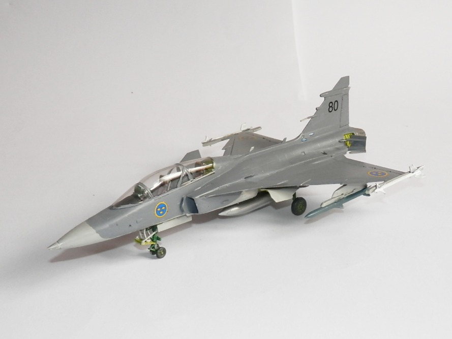
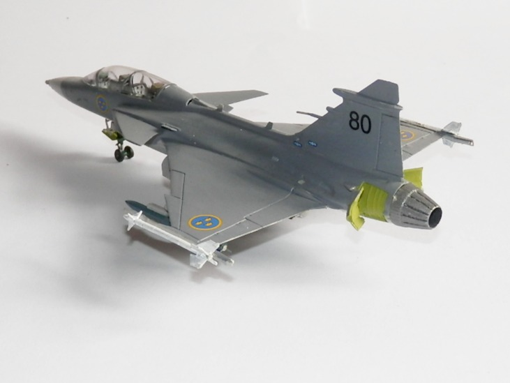
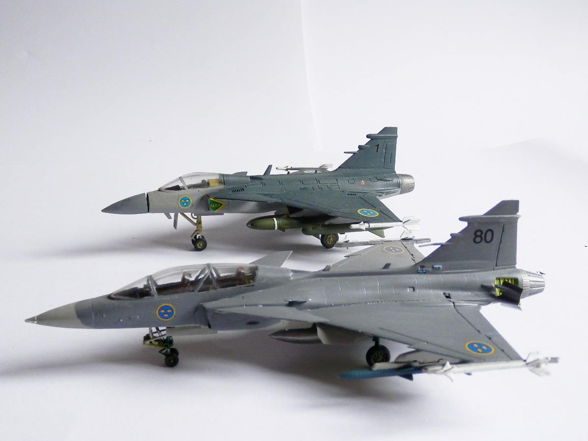
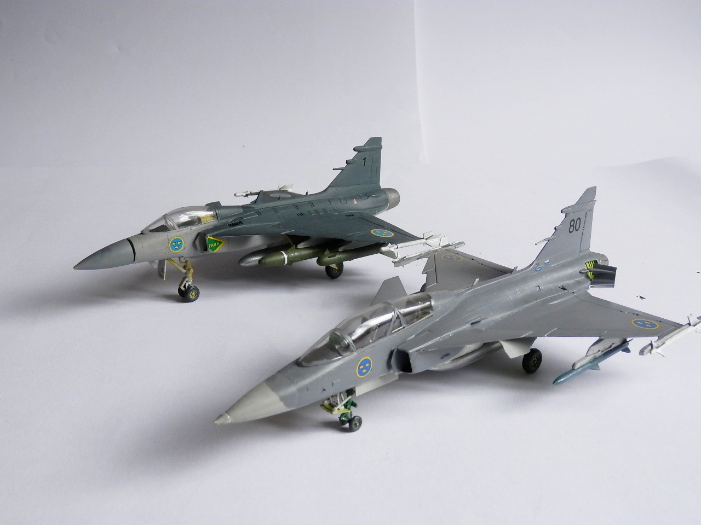

Aerei · scale model archive
SAAB Gripen Twin Seat
SAAB Gripen Twin Seat — Kit: Italeri, Scale: 1/72. Svenska Flygvapnet Bonus photo added, the two variants (SS and TS) merrily together

Photo gallery



English description
Svenska Flygvapnet Bonus photo added, the two variants (SS and TS) merrily together
Descrizione italiana
Svenska Flygvapnet. Foto bonus aggiunta: le due varianti, monoposto e biposto, allegramente insieme.